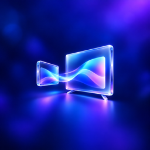
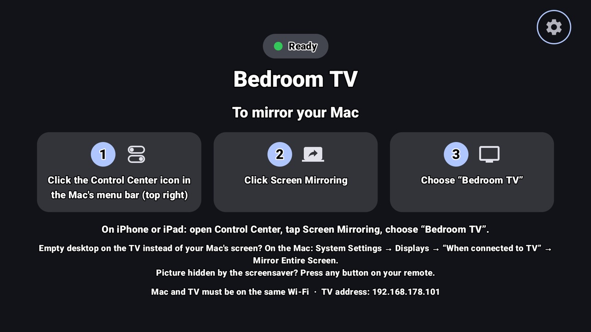
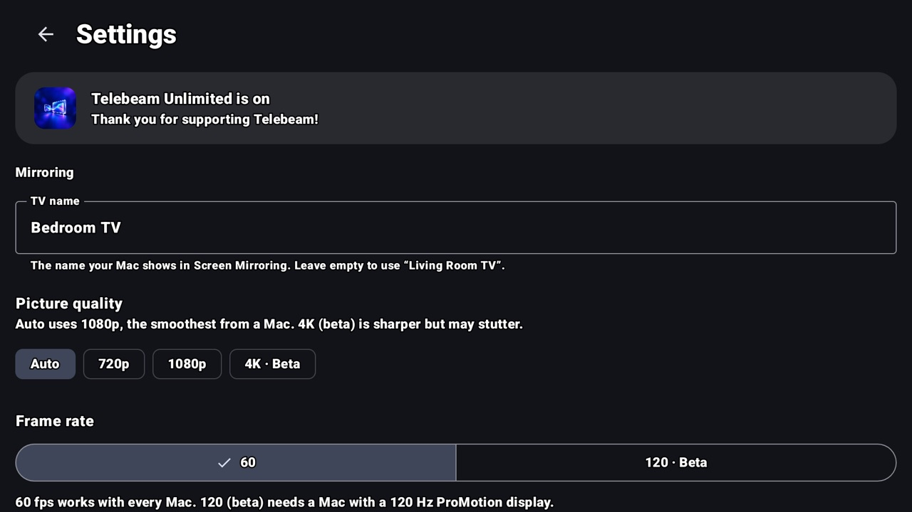

TelebeamYour Mac on the big screen. No extra box.
Telebeam turns your Google TV or Android TV into a receiver for the Screen Mirroring already built into your Mac. Also works with iPhone and iPad.
Get it on Google Play7-day free trial on Monthly, or a one-time Lifetime unlock. No ads, no account.

3 clicks on your Mac
Mac and TV just need to be on the same Wi-Fi. Nothing to install on the Mac.
What you can do
- Mirror your MacBook or iMac, or use the TV as a big second display
- Present slides and spreadsheets in a meeting room or classroom
- Watch your own videos, photos and web pages with sound
- Sharp picture with low delay, so the mouse feels right
- Your Mac's volume keys can control the TV volume

Plans
then billed monthly. Cancel anytime in Google Play.
Yours forever, all future updates included.
Prices are shown in your local currency in Google Play.
Works on
Google TV and Android TV: TVs from Sony, TCL, Hisense and Philips, Chromecast with Google TV, Google TV Streamer, Nvidia Shield and Android TV boxes. Tested on a Philips Google TV. If it doesn't run well on yours, write to us during your free trial.
TV already has its own mirroring receiver? Telebeam names itself “Living Room (2)” so both show up. TV missing from the Mac's list? See Mac doesn't see my TV.
Private
Everything stays on your home network. No ads, no tracking, no account, no data collected. Protected video from streaming services shows as a black screen; that is decided by the Mac and the service, not the TV.